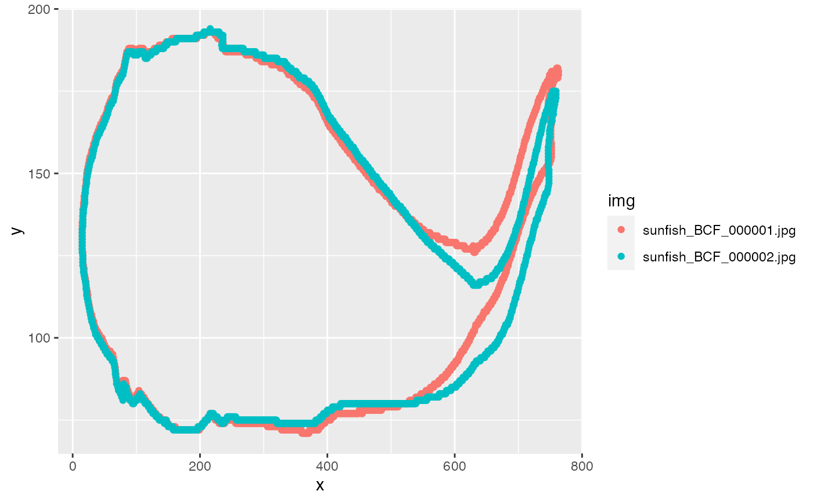

find.roi.RdFinds regions of interests (ROIs) within images according to search parameters by thresholding, binarization, and segmenting connected regions. Returns contour coordinates of ROI(s) and position and size descriptors.
find.roi( img = NULL, thr = "otsu", search.for = "largest", size.min = 0.01, bg = "white", edges = FALSE, border = 5, results = FALSE )
| img | character, the image file path or vector of paths. |
|---|---|
| thr | numeric or character ('otsu'); the threshold to determine binary image. See Details. |
| search.for | character, the search parameter. See Details. |
| size.min | numeric, indicating the minimum size of ROIs as a proportion of the pixel field to be considered in analysis. May be useful if smaller unimportant ROIs appear in the frame(s). Default is 0.01. |
| bg | character, the background color of the binary images (either 'white' or 'black'). Ignored if |
| edges | logical, should ROIs on image edges be evaluated. See Details. |
| border | integer, if |
| results | logical, should a binary image be printed to the graphics device. Value is forced to FALSE if the length of 'img' is >1. |
A named list or list of lists containing the following:
best a data table consisting x,y coordinates of the best contour according to 'search.for'
best.class the name the best ROI found in the image(s)
classes a data table containing the following for all ROIs detected:
'roi': the name (as letters) of each ROI found in the image
'edge': indicating whether ROI was on the edge of the image field
'size': area size of the ROI in pixels^2
'offset.x': ROI distance from horizontal center
'offset.y': ROI distance from vertical center
'offset': euclidean distance of ROI's centroid to image center
dim the x and y dimensions of the image(s) analyzed.
Thresholding operations can be performed with an arbitrary (user defined, 0-1) numeric value or with Otsu's method ('thr="otsu"'). The latter chooses a threshold value by minimizing the combined intra-class variance. See otsu.
search.for determines how ROIs are chosen:
"offset", the ROI with a centroid that is the shortest linear distance to the center of the field
"offset.x", the ROI with a centroid x position that is closest to the x position of the center of the field
"offset.y", the ROI with a centroid y position that is closest to the y position of the center of the field
"largest", the largest ROI and the default.
These choices will be made on ROI sets that are not on the edge of the field if 'edges=FALSE'.
edges is set by default to 'FALSE'. It is not advisable to include shapes that are on the edge of any frame and are therefore incomplete. Yet, if set to 'TRUE', the border adds a border of the background color to the image so that the intended ROI may be distinguished from the edge.
kin.search, kin.simple,kin.free, bwlabel
#>#> #> #> #>#> #>#> #> #>#download example video of a sunfish swimming and establish directories f <- "https://github.com/ckenaley/exampledata/blob/master/sunfish_pect.avi?raw=true" download.file(f, paste0(tempdir(),"/sunfish.avi")) dir.create(paste0(tempdir(),"/images")) dir.create(paste0(tempdir(),"/out")) #extract images vid.to.images(paste0(tempdir(),"/sunfish.avi"), out.dir = paste0(tempdir(),"/images")) #find ROIs and extract contours f <- list.files(paste0(tempdir(),"/images"),full.names=TRUE) rois <- find.roi(img=f,search.for="largest",size.min=0.10,thr=0.7)#> Warning: `data_frame()` was deprecated in tibble 1.1.0. #> Please use `tibble()` instead.#see results of a few conts <- do.call(rbind,lapply(rois[1:10], function(x) data.table(img=x$img,x$best))) library(ggplot2)#> #>